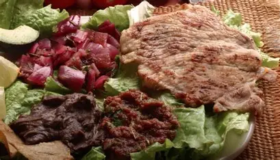

Descripción
El Poc Chuc es un platillo típico yucateco que consiste en carne de cerdo marinada en jugo de naranja agria y especias, luego asada a la parrilla o sartén. Se sirve con cebolla, frijoles, arroz y tortillas.
Su sabor cítrico y ligeramente ahumado lo hace un platillo favorito para el desayuno o comida ligera.
Ingredientes
| Ingrediente | Cantidad |
|---|---|
| Carne de cerdo (lomo o bistec fino) | 1 kg |
| Jugo de naranja agria | 1 taza |
| Ajo | 2 dientes |
| Sal y pimienta | Al gusto |
| Orégano seco | 1 cucharadita |
| Cebolla morada en rodajas | 1 pieza |
| Arroz blanco cocido | 1 taza |
| Frijoles negros refritos | 1 taza |
| Tortillas de maíz | 10 piezas |
| Aceite vegetal | Para freír la cebolla (opcional) |
Preparación paso a paso
- Preparar la marinada: Mezcla el jugo de naranja agria, ajo machacado, sal, pimienta y orégano en un recipiente.
- Marinar la carne: Coloca los bistecs o lomo en la marinada, cubre bien y deja reposar al menos 2 horas en refrigeración (mejor toda la noche).
- Asar la carne: Precalienta la parrilla o sartén a fuego medio-alto y cocina la carne hasta que esté dorada y bien cocida por dentro (aprox. 5-7 minutos por lado según grosor).
- Preparar la cebolla: Puedes colocar las rodajas de cebolla en la parrilla unos minutos para suavizarlas o freírlas ligeramente en aceite. Reserva.
- Montar el plato: Sirve la carne caliente acompañada de arroz blanco, frijoles refritos, cebolla y tortillas de maíz.
- Opcional: Puedes añadir un poco de salsa picante o limón al gusto para intensificar el sabor.
Consejos
Para un auténtico sabor yucateco, utiliza naranja agria fresca y cocina la carne a la parrilla si es posible. No sobrecocines la carne para que permanezca jugosa.